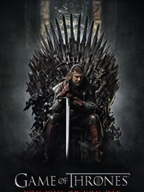
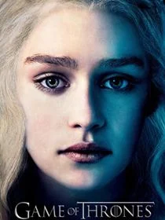
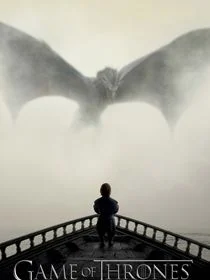
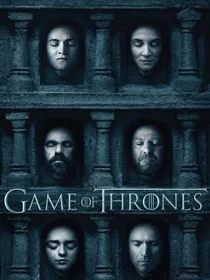
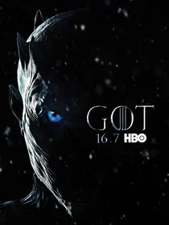

Temporada 1: ¡La serie, que se desarrolla principalmente en Poniente, comienza cuando el rey Robert Baratheon ofrece a Ned Stark convertirse en la Mano del Rey. Su mujer, Catelyn Stark, recibe una carta donde le explican que la anterior Mano del Rey fue asesinada por sus rivales, la Casa Lannister. Ned Stark debe averiguar quién le mató y asegurar la protección de su familia.
Además, hay una trama en otro continente llamado Essos con la familia Targaryen. Esta casa, actualmente exhiliada, ostentó el poder hasta que le usurparon el Trono de Hierro..
Temporada 2:La serie, que se desarrolla principalmente en Poniente, comienza cuando el rey Robert Baratheon ofrece a Ned Stark convertirse en la Mano del Rey. Su mujer, Catelyn Stark, recibe una carta donde le explican que la anterior Mano del Rey fue asesinada por sus rivales, la Casa Lannister. Ned Stark debe averiguar quién le mató y asegurar la protección de su familia.
Además, hay una trama en otro continente llamado Essos con la familia Targaryen. Esta casa, actualmente exhiliada, ostentó el poder hasta que le usurparon el Trono de Hierro.

Temporada 3: Tras derrotar a Stannis Baratheon en la Batalla del Aguasnegras, los Lannister continúan reforzados en el Trono de Hierro. Tyrion sufre los desplantes de su padre al serle retirado el título de Mano del Rey y Jaime Lannister mantiene su prioridad de volver a casa.
Los Stark comienzan a perder la guerra. Todo comienza a desmoronarse cuando Robb Stark rompe su promesa y se casa con Talisa Maegyr. Más allá del Muro, Jon Snow se une a los salvajes con intenciones ocultas y Daenerys Targaryen, que se encuentra en Astapor, continúa su lucha como heredera legítima del Trono de Hierro.
Temporada 4: Desembarco del Rey se prepara para la boda del rey Joffrey Baratheon y Margaery Tyrell. Tras el envenenamiento del rey en su boda, Cersei Lannister culpa a su hermano Tyrion y este es encarcelado. Finalmente, Sansa Stark consigue escapar de Desembarco del Rey con la ayuda de Petyr Baelish y se refugia en el Valle de Arryn. Bran Stark continúa buscando el cuervo de tres ojos.
En el Muro, Jon Snow debe advertir a sus superiores de los peligros de los salvajes y el ataque que planea Mance Ryder. Daenerys Targaryen conquista la Bahía de los Esclavos y toma el control de Meereen.

Temporda 5: En Meereen, Daenerys Targaryen debe lidiar con los Hijos de la Arpía, una organización que pondrá en entredicho la paz y el control de la ciudad. En el Muro, Jon Snow es elegido Lord Comandante de la Guardia de la Noche y se deberá aliar con los salvajes para detener a los Caminantes Blancos. En Invernalia, Sansa Stark (influenciada por Meñique) se casa con Ramsay Bolton. Tyrion Lannister y Varis, tras huir de Desembarco del Rey, ponen rumbo a Meereen para encontrarse con Daenerys Targaryen. Arya Stark viaja a Braavos para comenzar su entrenamiento con el Hombre sin Rostro.

Temporada 6: Los Stark derrotan a los Bolton en la épica Batalla de los Bastardos, recuperan Invernalia y finalmente, Jon Snow es coronado Rey en el Norte. Tyrion Lannister intenta gobernar Mereen, mientras que Daenerys Targaryen es prisionera de los Dothraki pero les quema vivos y se hace con el control de los Dothraki. En Desembarco del Rey, el Gorrión Supremo cada vez se hace con más poder entre su comunidad de fanáticos religiosos e incluso la reina Cersei no podrá evitar su castigo. .

Temporada 7: A diferencia de las temporadas anteriores, formadas por diez capítulos, la séptima temporada consiste en solo siete capítulos.
Esta séptima temporada se centra principalmente en la convergencia de las principales tramas de la serie. Se incluyen algunos de los eventos más importantes como Daenerys Targaryen llegando finalmente a Westeros con su ejército y tres dragones, la alianza de Jon Snow con Daenerys para acabar con los caminantes blancos, Arya y Bran volviendo a Invernalia para reencontrase con su hermana Sansa y la ruptura del muro por parte del ejército de muertos.
Temporada 8: Después de que el Muro cayese a manos del Rey de la Noche y uno de los dragones de Daenerys fuese revivido como si de un caminante blanco se tratase, todos deben unir sus fuerzas para luchar contra un enemigo en común. Sin embargo, Cersei tiene otros planes totalmente diferentes que involucran a la Compañía Dorada y a Euron Greyjoy.